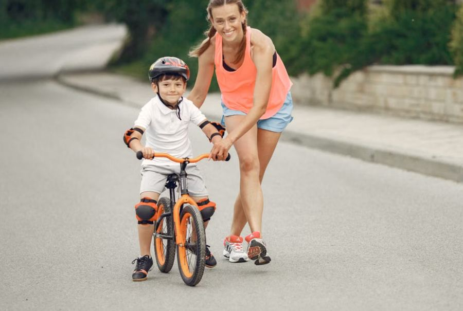
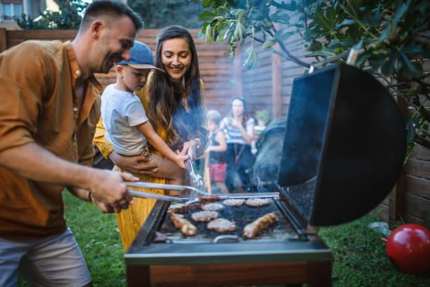
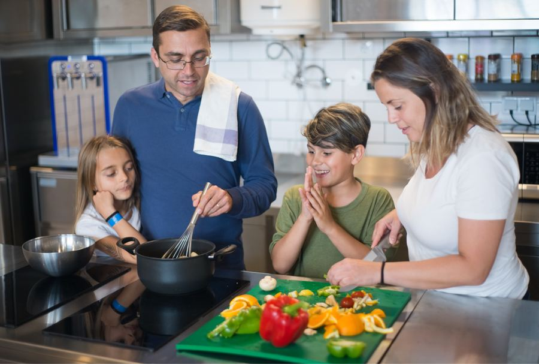
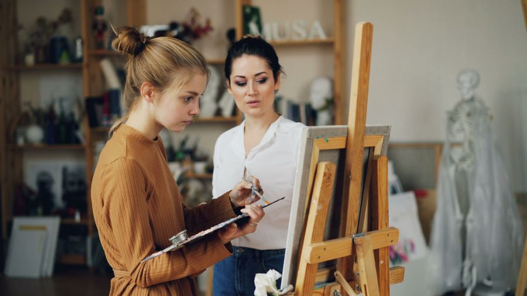

Aptis Speaking
Part 1: In this part, I am going to ask you three short questions about yourself and your interests. You will have 30 seconds to reply to each question.
1. Please tell me about your family.
=> There are four people in my family, my husband and my children. My husband is a doctor. He works for a hospital in Hanoi. At the weekend, we often go out. I really love my family. We often go to the park or have dinner together on Sundays. Spending time with them always makes me feel happy.
2. What is your favorite place in your country?
=> My favorite place is Ha Long Bay. It is in Quang Ninh, about 100km from Hanoi. It is beautiful and famous. Here we can swim in the sea, eat seafood and climb the mountain. The weather is nice. The people are friendly and kind. The food is delicious and healthy. I really like Halong Bay. Last time I visited, I took a boat trip around the bay and saw many beautiful caves. I hope to go back there again soon.
3. What did you watch on TV last night?
=> Last night, I watched a movie on TV. It was a cartoon, Tom and Jerry. It was about a cat and a mouse. It was very funny. I really like the mouse because he was smart. I watched it with my children, and we laughed a lot together. It reminded me of watching the same cartoon when I was young.
Part 2: In this part, I'm going to ask you to describe a picture. Then I will ask you two questions about it. You will have 45 seconds for each response.
 |
1. Describe the picture => In this picture, I can see a woman and a boy. The woman is about 30 years old and the boy is the bell four or five. I think they are mother and son. They are on the road. The mother is teaching the son how to ride a bicycle. They look happy. Behind them, I can see some trees. The weather in this picture is very nice. it is sunny and perfect for our activities. I like this picture because it reminds me of my childhood. |
2. What was your favorite childhood hobby?
=> When I was small, I liked playing games with my friends. It was fun and ueful. It helped me relax after school and share happy moments with my friends. Besides, I liked reading books. We often played outside until it got dark. Those simple games gave me some of my happiest childhood memories.
3. Why do you think children like to ride bicycles together?
=> I think children like to ride bicycles together because it is fun and good for their health. They can play, talk and enjoy their time together. Also, they can stay healthy and prevent health problems. For example, my children often ride around our neighborhood with their friends after school. It also helps them make new friends easily.
Part 3: In this part, I'm going to ask you to compare two pictures, and I will then ask you two questions about them. You will have 45 seconds for each response.
1. Tell me what you can see in these two pictures.


=> The two pictures show families preparing food together.
In the first picture, I can see some people in the garden. They are having a barbecue outdoors. They look happy. The weather is nice
In the second picture, I can see a family in the kitchen. They are preparing a meal together. Maybe they are making a salad. Both families seem to enjoy spending time together while cooking. I think preparing food together can make family bonds stronger.
2. How do you think the people in each picture are feeling?
=> I think the people in both pictures feel happy and relaxed. They are enjoying cooking and spending time together. Cooking together also gives them a chance to talk and laugh. I think these small moments are very important for a happy family.
3. Do you think it is important to teach young children how to cook?
=> Yes, I do. It is really useful. It helps children know how to cook and stay healthy. Also, they can become more independent. For example, my children can already make simple dishes like fried eggs. I feel very proud when they help me in the kitchen.
Part 4: In this part, I'm going to show you a picture and ask you three questions. You will have one minute to think about your answers before you start speaking. You will have two minutes to answer all three questions.

Tell me about a time when you learned a new skill.
How did you feel when you successfully mastered that skill?
What is the best way for people to learn and improve new skills in their daily life?
=> Regarding the first question, today I'm going to talk about a time when I learned a new skill. Last year, I learned how to cook. My mother taught me at home, and I practiced every weekend. At first, I made a lot of mistakes, but I kept practicing. Now I can cook several dishes quite well.
Turning to the second question, I felt very happy and proud because I could cook for my family. It also made me more confident. My family also encouraged me, which made me want to keep learning.
About the last question, I think the best way to learn new skills is to practice every day. People should also learn from teachers, friends or videos on the Internet. I also think it is important not to give up when the skill feels difficult at first.